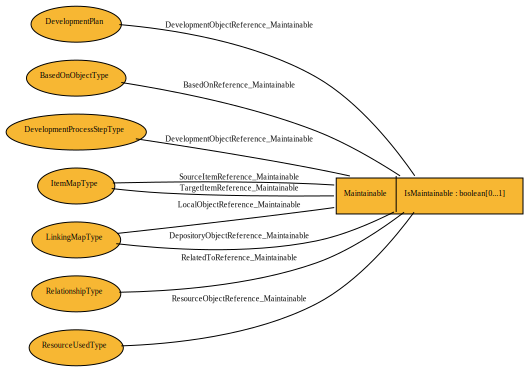

Maintainable¶
Adds the attribute identifying this as a maintainable object. All content of Maintainable is considered to be administrative metadata. Note that changes to the administrative metadata does not drive a change in the version of the parent objects. All content of Maintainable with the exception of ‘Note’ is considered to be administrative metadata. Note that changes to the administrative metadata does not drive a change in the version of the parent objects. See DDI 3.2 Technical Documentation: Part I for further details.
Item Type Hierarchy¶
- Versionable
- Maintainable
- Archive
- BaseLogicalProduct
- CategoryScheme
- ClassificationFamily
- CodeList
- CodeListScheme
- Comparison
- ConceptScheme
- ConceptualComponent
- ConceptualVariableScheme
- ControlConstructScheme
- DataCollection
- DDIInstance
- DDIProfile
- DevelopmentActivityScheme
- GeographicLocationScheme
- GeographicStructureScheme
- Group
- InstrumentScheme
- InterviewerInstructionScheme
- LocalHoldingPackage
- ManagedRepresentationScheme
- MeasurementScheme
- NCubeScheme
- OrganizationScheme
- OtherMaterialScheme
- PhysicalDataProduct
- PhysicalInstance
- PhysicalInstanceGroup
- PhysicalStructureScheme
- ProcessingEventScheme
- ProcessingInstructionScheme
- QualityScheme
- QuestionScheme
- RecordLayoutScheme
- RepresentedVariableScheme
- ResourcePackage
- SampleFrameScheme
- SamplingPlanScheme
- StudyUnit
- UnitTypeScheme
- UniverseScheme
- VariableScheme
Relationships¶

Properties¶
IsMaintainable¶
- Type
- boolean
- Cardinality
- 0..1
This is a fixed flag informing the system or user that in additional to being versionable the element is maintainable in its own right (outside of a parent object).